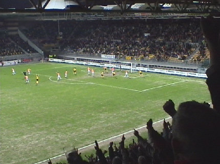
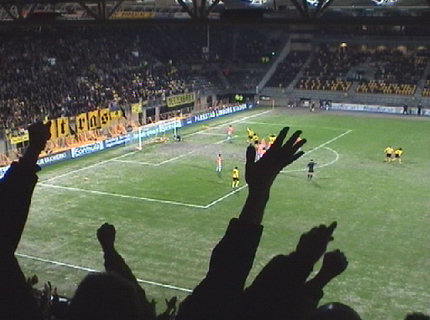
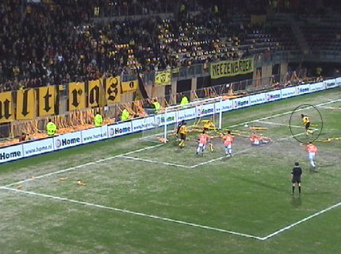

|
Roda JC - RBC (5-1) 25 maart 2006
|
Vrolijke gast in Z16.
Na ruim 5 jaar kleven de gekruiste hamers nog steeds op paal Z16-12-1.
Foto Frans spiedt het PLS af op interessante shots.
Atteveld als middelpunt van een explosief warming-up onderdeel.
Circa 15 die-hards van RBC.
"Een lintje voor Cziommer".
De boodschap is duidelijk: Cziommer moet bij Roda blijven !!!
Er komen zelden foto's van oost, maar hier is het bewijs dat de East-side
leeft! Het betreft hier overigens de RBC-supporters die in de omloop op
Oost mochten komen.
RBC trad deze keer aan in het thuis-shirt.
Oper (geblesseerd) en Sergio (geschorst) werden vervangen door Cristiano
en Sonko die hier de aftrap gaat nemen.
Na 9 minuten is het al raak door een hard schot van Cziommer in het dak
van het doel: 1-0.
Een beheerst applaus vanuit Z18 ;-)
Supersonko sterk aan de bal.
Na overtredingen op Bodor en Cristiano volgt dan eindelijk een vrije trap.
Cziommer krult hem er meesterlijk in: 2-0, (24').
Dit is het bewijs: Simon blijft bij Roda!
Cziommer knalt de bal de zestien in.

Sonko kopt de bal uit deze voorzet in: 3-0, (29').
Stout: hoekschop RBC buiten het vakje.
Prachtige kopbal van Fleur: 3-1, (52').
Bodor is slachtoffer van een charge van Lange. De RBC-speler krijgt zijn
tweede gele dus rode kaart.
Gregoor van Dijk... een van zijn laatste wedstrijden voor Roda JC.
Vrije trap: Cziommer legt aan...

Jool! 4-1, (74').
Nep-participant met nep-bom.
Langhaartje op verzoek van Mark S. uit B.

Een in eerste instantie afgeslagen bal van doelman Volders is een prooi
voor Rudge die zijn eerste doelpunt sinds zijn rentree scoort. Proficiat! Zo
wordt het 5-1, (87').
Als de wedstrijd er op zit volgt er een ondubbelzinnige mededeling vanuit
de west-side voor de directeur van Roda.
Pa met dochter in Z16. Mail me voor de full-size pic: koempel@koempel.nl
Dit Britt-popje heeft bijna net zoveel verstand van muziek als van voetbal,
dus Maximo Park zal wel erg bemmend zijn.
De Kickoff werd bezocht door Oper, Saeijs en Van Dessel!
Ook waren er nogal wat slachtoffers van het belachelijke politie-optreden
rond Ajax-Roda aanwezig die nogmaals hun boodschap duidelijk maakten.
Jan en Jo, ze vonden het zo!
Het is nu wel duidelijk waarom Jean-Paul zo vaak naar de Kickoff komt...
Geen idee waarom deze foto er op staat.
Het bewijs: Koffieboer gebruikt EPO !!
Nog even volhouden, thuis is er weer Alfa!
© Koempels Pleasure Dome
|